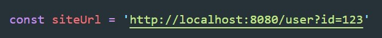
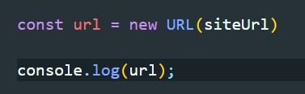
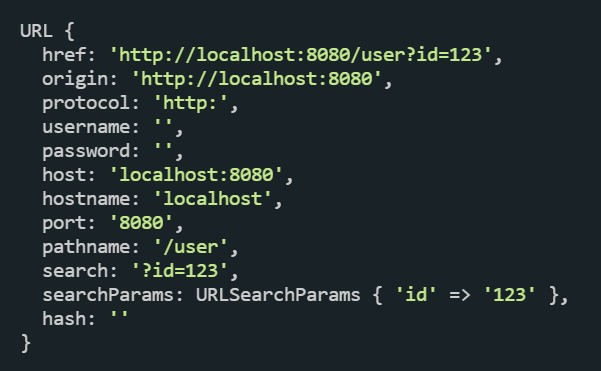
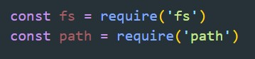
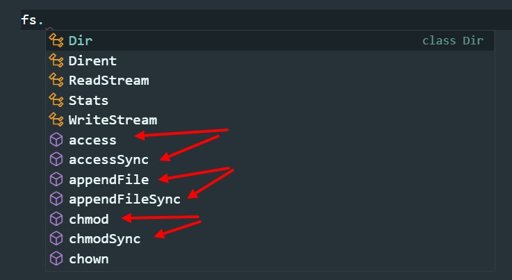
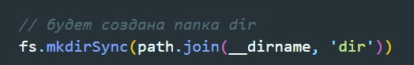
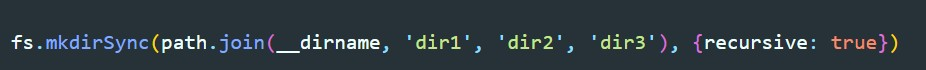
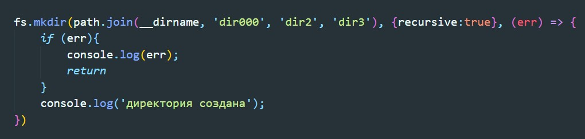
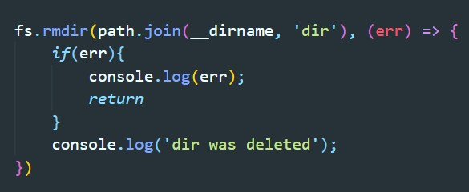

path - это стандартный модуль, который позволяет взаимодействовать с путями. Что бы работать с этим модулем, его нужно импортировать

path.join() - позволяет склеивать пути. Добавляет слеш или обратный слеш в зависимости от операционной системы

При том что первым аргументом можно передать одну из глобальных переменных node.js
Если после __dirname добавлять следующими аргументами '..' то будет переход по директориям на один шаг назад
Допустим у нас есть переменная которая содержит полный URL адрес
В Node.js есть класс URL который вернет объект со всем свойствами этого url
В результате мы увидим вот такой объект
Для взаимодействия с файловой системой нам понадобятся стандартные модули node.js fsи path
У fs есть методы в двух варинтах, один ассинхронный другой нет.
Разница в том, что первый метод не блокирует главный поток, второй блокирует главный поток, т.е. операция не продолжится пока методы не выполнится
mkdirSync - создает директорию, если директория уже существует, то мы получим ошибку
Что бы создавать вложенные папки рекурсивно, мы должны передать вторым аргументом объект с ключем recursive: true
Асинхронные методы работаю несколько иначе. На примере mkDir вместо объекта с опциями мы передаем callBack функцию, которая первым аргументом получит ошибку и эту ошибку мы можем обработать
rmdir - удаляет директорию
 48:13